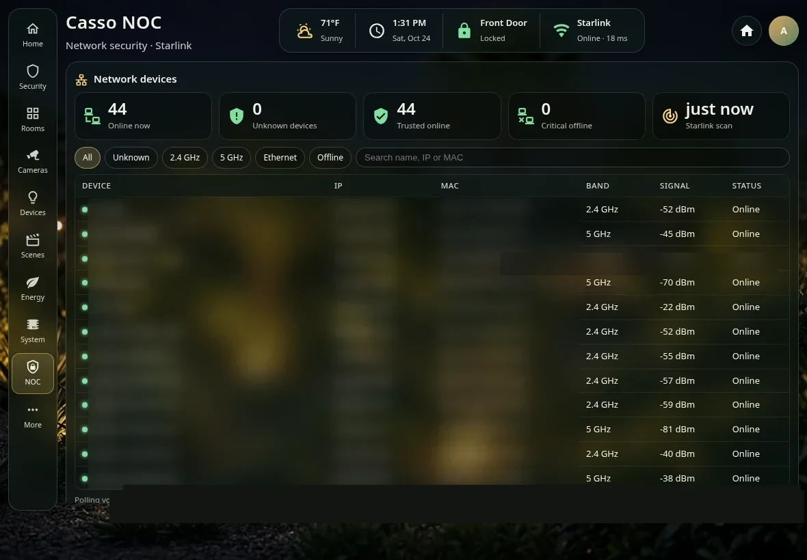

03b / PROJECT NOTES
Casso NOC.
A network operations view inside Home Assistant that watches the home Wi-Fi client list, flags unknown devices, and alerts when critical equipment goes offline.
The goal
Know what is on the home network. With more than forty connected devices (phones, TVs, cameras, appliances, hubs), the router app shows a list but does not say when something new appears or when an important device drops off.
Casso NOC brings that visibility into the same Home Assistant dashboard used to run the house.
Architecture
This deliberately abstract view omits addresses, hardware identifiers, private hostnames, and network topology.
Implementation
A small Python service on the Raspberry Pi polls the Starlink router’s client list about once a minute and normalizes each device: name, band, signal strength, and online state. The results feed Home Assistant entities, so the data behaves like any other sensor in the house.
A plain YAML allowlist holds trusted devices. Anything not on the list is marked unknown and tagged NEW on the dashboard. Adding a device to the list clears it within about a minute, with no restart.
A dedicated NOC page in the dashboard shows online, unknown, trusted, and critical-offline counts, with filters for All, Unknown, 2.4 GHz, 5 GHz, Ethernet, and Offline, plus search across the device table.
Challenges & technical decisions
Alerts worth reading
Push notifications go to iPhone and iPad only when an unknown device joins, not on every reconnect. A separate alert fires when a critical device (cameras, display hub, smart-home hub, mesh node, or the Pi itself) has been offline for more than ten minutes, which filters out brief Wi-Fi drops.
Devices that don’t identify themselves
Appliances such as a smart fridge or washer often expose no open ports, so a local scan can’t name them. Using the router’s own client list gives the friendly name and band directly, then the allowlist turns that into trusted or unknown.
Private by default
Remote viewing runs through Tailscale. The NOC sits next to existing services on the Pi rather than replacing them, and nothing about the network is published publicly.
Results
A working, always-on view of the home network inside Home Assistant: every connected device in one table, new-device alerts on mobile, and offline warnings for the equipment that matters. It is a personal network-security project, not an enterprise monitoring product.
